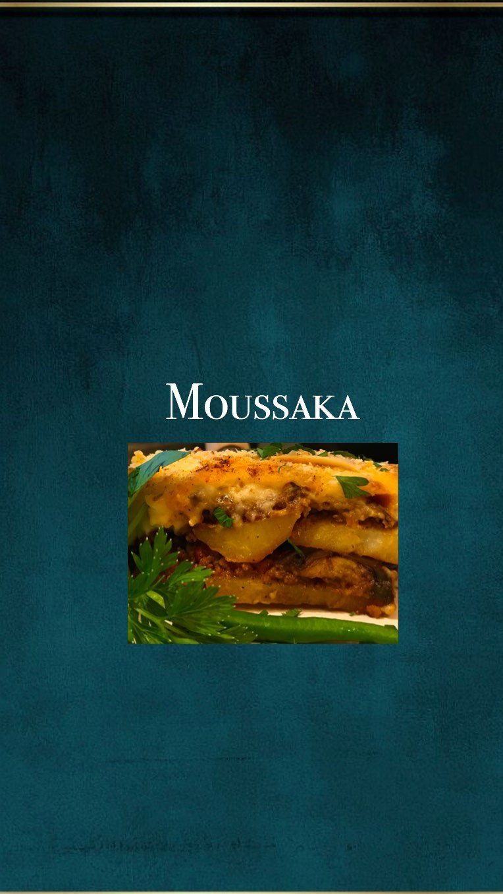

Grécka musaka podľa @monica.kitchen2019 — Normy Jedál
امروزه موساکا عمدتا'' به عنوان یک غذای یونانی شناخته میشه. اما به احتمال خیلی زیاد منشأ اولیه ی اون خاورمیانه است.
این غذای فری خوشمزه دارای ورژن های مختلفه... برخی از مواد اولیه و طریقه ی تهیه اون در کشورهای مختلف منطقه خاورمیانه از جمله مصر قدری با هم متفاوته... در برخی کشورها گرم و در بعضی دیگر سرد سرو میشه... اما همواره یکی از مواد اولیه اصلی اون « بادمجان » 🍆است. البته در کشورهای بالکان نظیر بلغارستان، بوسنی، رومانی و... در موساکا، بادمجان جای خود رو به سیب زمینی داده است.
رسپی امروز تلفیقی است از ورژن مدرن موساکای یونانی که برای اولین بار در سال ١٩٢٠ توسط یک آشپز مشهور یونانی معرفی شد و ورژن بالکانی آن. یعنی دو لایه گوشت چرخکرده گوساله( یا مخلوط) با سس گوجه فرنگی و ادویه، دو لایه بادمجان سرخ شده و سیب زمینی و نهایتا'' سس بشامل و پنیر.
مواد لازم برای یک ظرف پیرکس متوسط تنظیم شده است.
مواد لازم مخلوط گوشت:
. پیاز متوسط ( ترجیحا'' قرمز ) ١ عدد
. سیر پوره شده ٢ حبه
. آویشن ١ ق.چ
. نمک و فلفل سیاه
. برگ بو ١ عدد
. گوشت چرخکرده گوساله( یا مخلوط ) ۶٠٠ گرم
. آب گوشت ٢٠٠ میلی لیتر
. رب گوجه فرنگی ١ ق.غ
. پاساتا ( پوره گوجه فرنگی ) مارک دلپذیر ١/٣ کاپ
. کنسرو گوجه فرنگی قطعه قطعه شده ١ عدد🥫
. شکر ( ترجیحا'' قهوه ای ) ١/٢ ق.غ
. چوب دارچین ١ عدد
. نمک، فلفل سیاه و پاپریکا دودی
. جعفری تازه ١ ق.غ و کمی بیشتر برای تزئین
. بادمجان دلمه ای ٣ عدد بزرگ🍆
. سیب زمینی بزرگ ٢ عدد🥔
. مواد لازم سس بشامل:
. کره ١٠٠ گرم
. آرد سفید ١٠٠ گرم
. شیر ٩٠٠ میلی لیتر🥛
. نمک،فلفل سفید و جوز هندی به مقدار لازم
. زرده تخم مرغ ٢ عدد
. پنیر پارمزان و پودر سوخاری پانکو به مقدار لازم
فر c*١٨٠ / حدود ۴۵ دقیقه الی ١ ساعت
#موساکا #موساکا_یونانی #غذای_یونانی #moussaka #delpazirco #greckiedania #greckakuchnia #greckamusaka #pogrecku
@delpazirco